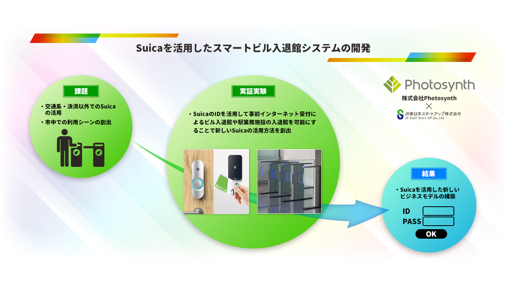

Today's Topic
受付不要、Suicaで入館？
株式会社Photosynth（フォトシンス）は、「JR東日本スタートアッププログラム2020」にて総合グランプリ「スタートアップ大賞」を受賞しています。このとき提案した「Suicaを活用したスマートビル入退館システムの開発」が実証実験フェーズに入るそうです。
自粛で行動範囲がグッと小さくなって、電車には全く乗らなくなりました。それに、運動不足を解消しようと2駅くらいの移動だと歩いちゃうんですよね。そんな感じなのでスイカも全く使っていません。ちなみにモバイルスイカなのでコンビニとかでも使えるけど、私はクレジットカードのポイントを溜めたいのでモバイルスイカではなくIDを使います。
そんなスイカですが、今回紹介するスイカの新しい使われ方は、ビル入館時などのキーの代わりになるというもの。

ホストからインターネット上で招待状みたいのが送られてきて、そこに自分のスイカ情報を入力しておくと、当日は受付を通らず、ピッと機械にスイカをかざせば入館できるという仕組みみたいです。画像にあるAkerunIDは何に使うんでしょう。。ホストからの承認の印でしょうか。
JR東日本本社ビルの受付で2/1〜3月末まで実験し、支社などで働く社員の本社来訪シーンにおけるビル入退館の体験向上を検証するようです。